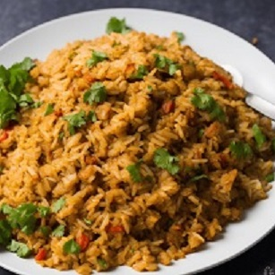

Nasi Goreng

Description
Nasi Goreng is a Malaysian food where you fry rice along with stir fried vegetables and eggs.
The dish can be paired with whatever protein you like, the Malay favour using Chicken in which the dish would then be called Nasi Goreng Ayam. Your protein can be either added into the stir fry or cooked seperately and added as a side, like a fried chicken drumstick
Ingredients
- Day old rice
- Onion
- Garlic
- A selection of stir fry veg (peppers, baby marrow and carrots make for a good selection)
- Olive oil
- Soy Sauce
- Salt and Pepper
- Eggs
Steps
- Chop the onions and fry them in a wok covered in olive oil
- Before the onions brown, add your garlic crushed to the mix and stir
- Add in your stir gry vegetables and stir fry till they are cooked
- Once your vegetables are cooked, add in your rice
- Season with soy sauce, pouring in a clockwise motion around the wok and stir it into the rice
- Make a hole in the rice and add 2 beaten eggs, quickly stirring them into the rice
- Add the rest of your spices to taste
- Once the rice has thoroughly browned, take off the stove and serve hot
Return To Homepage